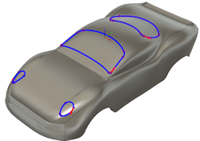

<div id="curves"><p>Select the guide curves to be machined.</p>
<table class="tipTable" cellspacing="10">
<tr>
<td><center></center></td>
</tr><tr>
<td><center><p>Select one or more curves for machining.</p></center></td>
</tr></table>
</div>